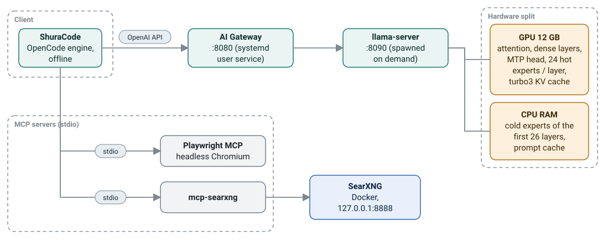

An OpenAI-compatible gateway in Python: loads the model on demand, saves long sessions (100k tokens restored in 0.5 s instead of 156 s) and survives crashes. My own llama.cpp fork in C++ with a VRAM governor and an expert cache, so the desktop never stutters. An evaluation harness of 111 agentic coding tasks. 580+ tests, CI on three OSes.